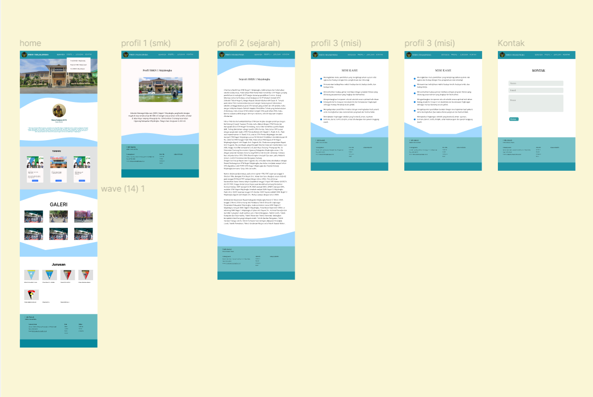
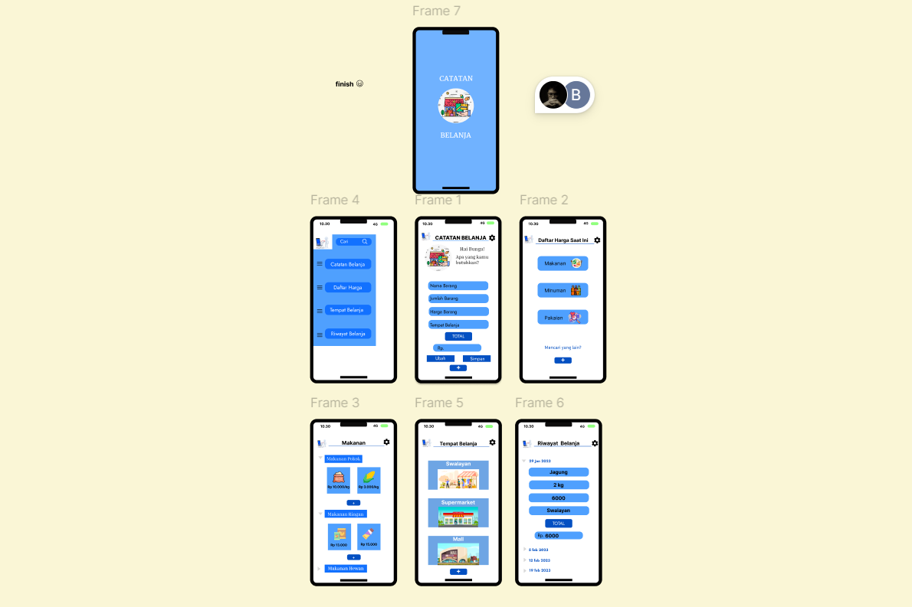

Web Sekolah
Mendesain dan mengembangkan situs web untuk sekolah, termasuk halaman utama, halaman informasi, dan halaman kontak. Proyek ini menampilkan tata letak yang bersih dan desain responsif.
View ProjectAplikasi Catatan Belanja
Desain UI/UX untuk aplikasi catatan belanja yang mencakup berbagai fitur penting, seperti catatan belanja, daftar harga kebutuhan pokok saat ini, tempat belanja, dan riwayat catatan belanja. Fokus pada kemudahan penggunaan dan visual yang menarik untuk membantu pengguna mengelola kebutuhan dengan lebih efektif.
View Project